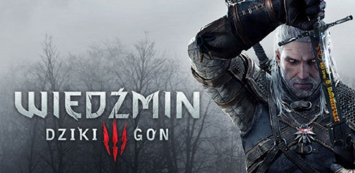

Gry Rpg

Fallout 3

Fallout 3 to kolejna odsłona kultowej serii z gatunku cRPG, zapoczątkowanej w 1997 roku. Opracowaniem niniejszej części cyklu zajęli się twórcy gry The Elder Scrolls IV: Oblivion, wykorzystując jej ulepszony silnik. Aczkolwiek przykładowo system animacji i efektów świetlnych zaprojektowano od podstaw. Grać można z wykorzystaniem perspektywy FPP lub TPP.
Stardew Valley

Stardew Valley to wydana na platformie PC, Switch itd. sandboksowa gra RPG, zainspirowana niezwykle popularną serią farmerską Harvest Moon, znaną głównie z przenośnych konsolek firmy Nintendo. Fabuła gry Stardew Valley opowiada historię młodego mężczyzny, wiodącego sztampowe życie pracownika dużej korporacji.
Darkest Dungeon

Wzorem wcześniejszych odsłon cyklu, w Europa Universalis IV gracz wciela się w rolę szarej eminencji, która kieruje rozwojem wybranego kraju na przestrzeni wieków. Tym razem do wyboru jest ponad 250 nacji zamieszkujących praktycznie cały glob. Zależnie od scenariusza długość historycznego okresu gry może wynosić nawet blisko 400 lat (w kampanii głównej).
Wiedźmin3: Dziki Gon

Wiedźmin 3: Dziki Gon (The Witcher 3: Wild Hunt) na komputery osobiste to trzecia odsłona popularnej serii gier RPG akcji opartej na prozie Andrzeja Sapkowskiego. Gra action RPG, stanowiąca trzecią część przygód Geralta z Rivii. Podobnie jak we wcześniejszych odsłonach cyklu, Wiedźmin 3: Dziki Gon bazuje na motywach twórczości literackiej Andrzeja Sapkowskiego, jednak nie jest bezpośrednią adaptacją żadnej z jego książek.
The Elder Scrolls V: Skyrim

The Elder Scrolls V: Skyrim to kolejna część serii cRPG autorstwa zespołu Bethesda Softworks. Ponownie odwiedzamy w niej kontynent Tamriel, a fabuła tym razem obraca się wokół powrotu do tej krainy pradawnej rasy smoków. Akcja toczy się 200 lat po wydarzeniach opowiedzianych w grze Oblivion. Gracze wcielają się w jednego z ostatnich bohaterów parających się profesją dovahkiina, czyli łowcy smoków.
Poznaj najlepasze gry według mnie na pc. Wszystkie prawa zastrzeżone ©